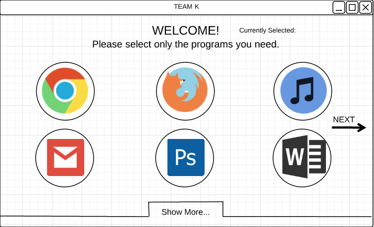
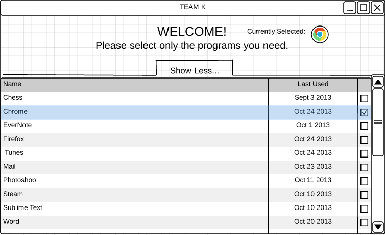
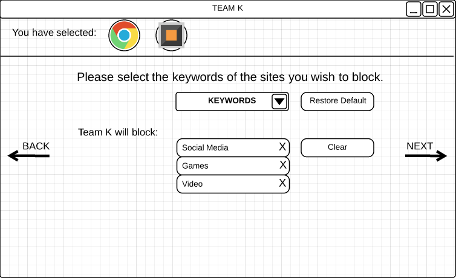
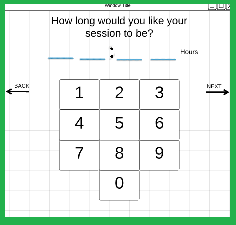
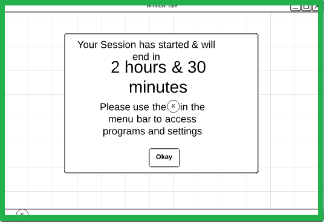
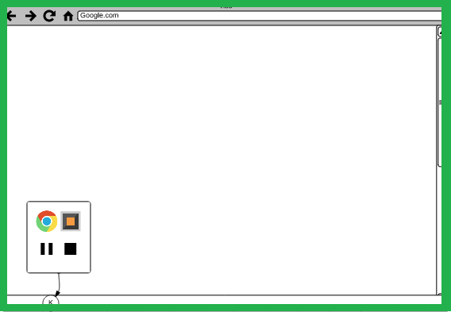
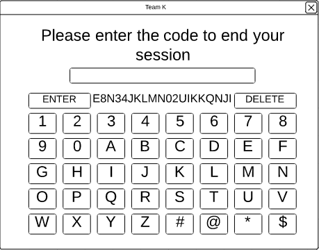
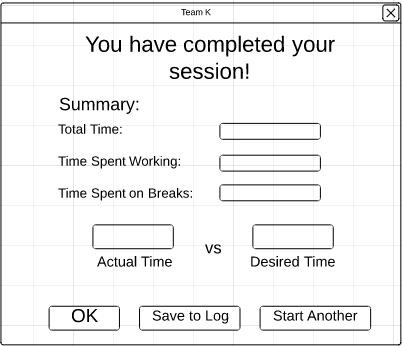

Jennifer suggested we use a program called LucidChart to create our low-fidelity prototypes. We titled our project "Baby Boy Team K" because we were still in the early stages of design and we had not come up with an actual name yet. We split the work up; Jennifer did the first three pages, I did the next four and Kyle did the last two.
       